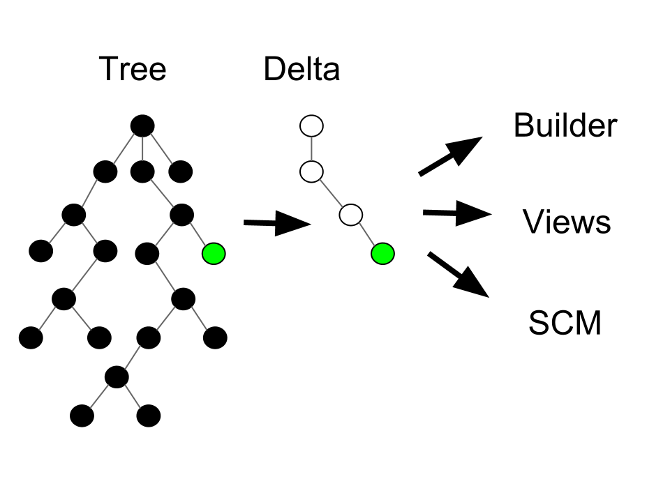
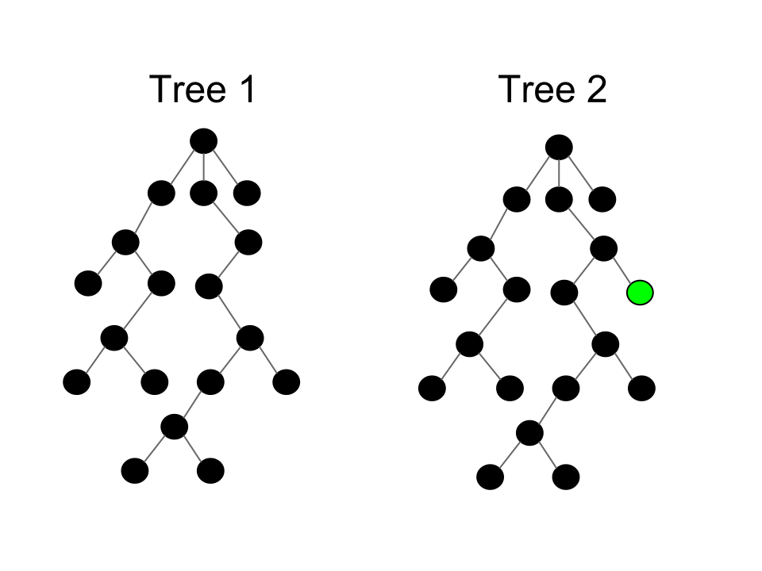
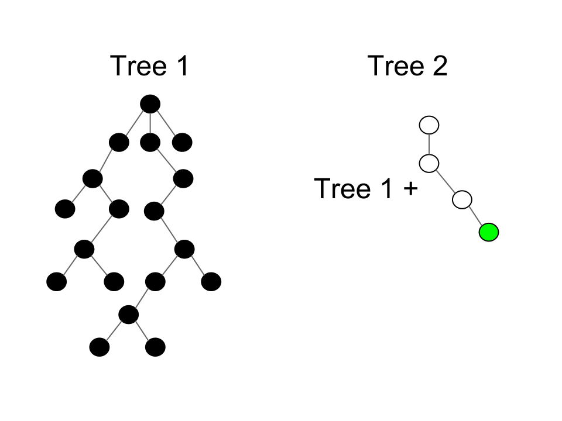

Eclipse SDK's Greatest Hits:
The First Ten Years
John Arthorne
March, 2012
Disclaimer
-
This is a semi-random, subjective list
-
Just some deep Eclipse implementation details that I think are cool, from my perspective
-
This presentation contains code
Source: http://www.flickr.com/photos/cara_vsangel/
What we're going to look at
-
Workspace tree representation
-
Incremental Java build
-
RCP refactoring
-
Command framework
-
p2 resolver
Workspace tree representation
It's ElementTree my dear Watson, ElementTree
ElementTree.java, line 75
ElementTree motivation
-
Typical edit/compile/deploy cycle for a developer focuses on a small segment of a potentially very large code base
-
Want to aggressively optimize for this common cycle: make performance cost proportional to the change, rather than to the size of the workspace
-
Create and manipulate "units of change" that are passed around to interested parties
Data flow

Additional observations
- Clients want a delta of the workspace state between two moments in time
- Different clients may want deltas with different start and/or end points
- May need to keep track of hundreds of tree states at once
- How to efficiently represent all these different deltas in memory?
- How to compute these deltas without traversing entire workspaces?
Representing two tree states

Representing tree states as deltas

More details
- Have only one complete tree, and represent all others as deltas
- Only one delta is mutable - representing current operation
- Immutability allows trees to share common parent and nodes to share children
- Each tree seems complete when traversing using API, but internal structure quite different
- Computing deltas is nearly free for most common operations
Lessons learned
- Not all optimization is a speed-space tradeoff. Here we greatly reduced space required to represent states, and made delta calculation very fast
- Textbook data structures work very well in most programming situations, but sometimes
a very specialized structure is called for
- Internal representation of a data structure can be radically different from external appearance
Incremental Java build
Conducts a trial on a single compilation unit. Returns true if the unit
is guilty. The sentence is compilation without possibility of parole.
IncrementalImageBuilder.java v_146, line 1570
Starting assumptions
- Compilation is expensive
- Compiling a single file can create a ripple effect where many more files need compiling
Source: Bill Gracey
Eclipse 1.0 Java builder
- Used a trial metaphor
- When a file was compiled it produced evidence (e.g., class B is a subclass of A)
- When A is changed, all files that refer to it are put on trial (e.g., method foo() removed from A)
- All the corner cases are considered: does B refer to foo(), does it also declare foo() and invoke super?
- Compile guilty files; repeat
Revisiting assumptions
- Meanwhile JDT compiler was rewritten to be blazingly fast
- You only need to recompile dependents when there are structural changes
- Structural changes have little or no ripple effect
- Keeping all the evidence around is expensive and slows down compilation
Builder 2.0
- When a file is compiled, check for structural changes by comparing signatures with previous .class file
- If no structural changes, we are done
- If there are structural changes, recompile all dependents
- Faster on average and vastly more memory efficient than Eclipse 1.0 builder
Lessons learned
- Sometimes you need to revisit your starting assumptions
- Sometimes the optimal solution is not the best!
- A simpler solution is often easier to maintain (unnecessary compilation no longer a bug)
RCP refactoring
Performs arbitrary actions when the event loop crashes.
WorkbenchAdvisor.java, line 297
RCP history
- As an integration platform, Eclipse focus was on seamless integration
- Plugins by design had little or no control over general appearance
- Plugins could only add; not remove
- But some people wanted to be able to build applications that looked very different
- Wanted to remove some of the built in functionality
RCP refactoring
- Mechanical part was scrubbing "tool" artifacts from API
- Harder part: decoupling workbench from the application so other applications could use it
- Required inversion of control - separating policy from mechanism
- IDE-specific behavior and functionality separated from the workbench
- Can't just create preferences - must be under application control
Policy vs mechanism
|
Mechanism
|
Policy
|
|
Error handling
|
Show error dialog, log, exit
|
|
Menus
|
What menus appear, what do they contain
|
|
Toolbars
|
Decide what commands appear in toolbar
|
|
Default perspective
|
Select default perspective
|
|
Startup
|
Restore settings, welcome screen, login
|
|
Window trim
|
Progress, status line, title
|
Workbench advisor
- Application in charge of creating a workbench if desired:
PlatformUI.createAndRunWorkbench(Display, WorkbenchAdvisor)
WorkbenchAdvisor is consulted on aspects of window appearance, and has
"hooks" that are run on startup, window open, shutdown, etc.- Advisor has complete control over default set of commands in menu and toolbars
- Plugins can still contribute their own extra commands if the menu/toolbar exists
Many ways to add policy
|
Mechanism
|
Arity
|
User Control
|
App Control
|
Plugin Control
|
|
Extension points
|
Many
|
No
|
Transforms
|
Yes
|
|
Services
|
Many
|
No
|
No
|
Yes
|
|
Preferences
|
Many
|
Maybe
|
Yes
|
Yes
|
|
System prop
|
One
|
Yes
|
Yes
|
Yes
|
|
Advisor
|
One
|
No
|
Yes
|
No
|
Lessons learned
- The "policy" vs "mechanism" distinction burned into committer minds
- When designing functionality, always have to ask if another app might want to do it differently
- Is it something any plugin should be able to control? Or only application? Only user?
- There are many ways to offer extensibility with various tradeoffs
Command framework
Okay. Have a seat. Relax a while. This is going to be a bumpy ride.
WidgetMethodHandler.java, line 81
Key bindings history
- Eclipse 1.0: hard-coded, unmodifiable
- Eclipse 2.0: plugins can contribute bindings, only editor bindings can be customized
- Eclipse 2.1: user contributed key bindings, concept of scopes but limited (global vs editor)
- Eclipse 3.0: key bindings in dialogs, expanded concept of scopes
- Eclipse 3.1: Introduced command framework.. views can override global commands
Challenges
- Decisions on every key stroke
- Bindings change with active part/shell
- Ctrl+B could be Build or Bold
- F2 in Package Explorer could be refactor or file rename
- Incrementally bolting on functionality to original design starting to become untenable
- Committers leaving to open breweries, become apple farmers, or to live in an Ashram
Command framework
- Introduced separation between command and handler
- Key bindings are mapped to commands, command get bound to handlers
- Mapping from binding to command is stable -> Cache!
- Relationship between command and handler still needs updating on each part activation
- Only need to process commands that have a handler specific to that part
Lessons learned
- Incrementally adding functionality over time can reach a breaking point where
you need a fundamental rethink
- Creating a pure "model" layer between user inputs and resulting behaviour was very powerful
- Different parts of the problem could be isolated and optimized
p2 resolver
The fix is to avoid the workaround.
Control.java (Motif), 4076
p2 Background
- Update manager only resolved feature dependencies
- Features: once installed, always installed
- A feature you don't really care about can block install of something you really want
- Resolving dependencies could sometimes be slow but was generally usable
- Redundant expression of dependencies at feature and plugin level was a source of bugs
Observations
- Some installed things are "roots" that the user chose to install,
other things are installed only to satisfy dependencies
- In p2 we wanted to ensure all dependencies were satisfied - feature, bundle, and package level
- This is an NP hard constraint satisfaction problem, and our hand-crafted resolver wasn't good enough
Boolean satisfaction problem
- A series of boolean expressions (AND, OR, and NOT)
- Is there a set of variable assignments that will satisfy all expressions
- Or, what set of values satisfies the most expressions (MAX-SAT)
1: x & !y
2: x | y
Solution: x=true, y=false
Mapping install to SAT (Projector)
a := Plugin A 1.0 - requires B [1.0,2.0)
b := Plugin B 1.0
c := Plugin B 1.1
1: (a & b) | (a & c)
2: (b & !c) | (!b & c)
Solution: a=true, b=false, c=true
- Also assign weights to expressions to cause higher plugin version to be favoured
- Throw the problem at a SAT solver
Lessons learned
- Need to recognize when you have an NP hard problem
- There are probably others who have solved this problem more efficiently
- Those things you learned in school about algorithm complexity and isomorphism sometimes come in handy!
Thank you